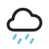

¡Hola, soy Denise! I'm a product designer based in Vancouver, Canada.

Over the past 10+ years, I've worked across enterprise and 0-to-1 products — previously at Frame.io (Adobe), where I designed features like Approvals, Reel Layout *and others.
Before that at MetaLab, partnering with teams like The Athletic, Tinder *and a bunch more.
Dogs, Muay Thai, scents in all forms, and hot sauce are my essentials.